Publication-ready tables and reports
tables-and-reports.RmdTables
irt_table() formats any IRTistic result consistently:
fixed decimals, APA-style p-values, SEs in parentheses, readable column
names, a caption and a note.
fit <- irt_fit(sim_irt(600, 10, "2pl"), "2pl")
irt_table(fit)
#> Item parameter estimates
#>
#> Item Model a b
#> I01 2pl 1.01 (0.15) 0.05 (0.10)
#> I02 2pl 1.12 (0.17) -0.39 (0.10)
#> I03 2pl 0.38 (0.11) 1.39 (0.45)
#> I04 2pl 1.30 (0.20) 0.94 (0.13)
#> I05 2pl 0.77 (0.14) -1.36 (0.24)
#> I06 2pl 0.91 (0.15) -0.67 (0.14)
#> I07 2pl 0.51 (0.12) -0.24 (0.18)
#> I08 2pl 0.91 (0.15) 1.11 (0.18)
#> I09 2pl 1.17 (0.18) -0.88 (0.13)
#> I10 2pl 1.38 (0.20) 0.20 (0.08)
#>
#> Note. Marginal maximum likelihood estimates; standard errors in parentheses. a =
#> discrimination, b = difficulty / threshold, g = lower asymptote, u = upper
#> asymptote. N = 600, log-likelihood = -3714.19, AIC = 7468.4, BIC = 7556.3.In an R Markdown or Quarto document, ask for HTML, Markdown or LaTeX:
| Item | Measure | SE | N | Infit MNSQ | Infit ZSTD | Outfit MNSQ | Outfit ZSTD | Obs. avg | Exp. avg | Pt-measure r | Flag |
|---|---|---|---|---|---|---|---|---|---|---|---|
| I01 | 0.05 | 0.10 | 585 | 0.88 | -4.45 | 0.85 | -4.68 | 0.49 | 0.49 | 0.50 | productive |
| I02 | -0.39 | 0.10 | 585 | 0.86 | -4.55 | 0.82 | -4.50 | 0.59 | 0.59 | 0.54 | productive |
| I03 | 1.39 | 0.45 | 585 | 0.99 | -0.57 | 0.98 | -0.63 | 0.37 | 0.37 | 0.18 | productive |
| I04 | 0.94 | 0.13 | 585 | 0.85 | -3.17 | 0.74 | -3.46 | 0.28 | 0.27 | 0.55 | productive |
| I05 | -1.36 | 0.24 | 585 | 0.95 | -1.19 | 0.90 | -1.85 | 0.72 | 0.73 | 0.36 | productive |
| I06 | -0.67 | 0.14 | 585 | 0.91 | -3.00 | 0.88 | -3.07 | 0.63 | 0.63 | 0.45 | productive |
| I07 | -0.24 | 0.18 | 585 | 0.97 | -1.85 | 0.97 | -1.90 | 0.53 | 0.53 | 0.27 | productive |
| I08 | 1.11 | 0.18 | 585 | 0.92 | -1.84 | 0.87 | -2.41 | 0.29 | 0.29 | 0.42 | productive |
| I09 | -0.88 | 0.13 | 585 | 0.87 | -3.17 | 0.79 | -3.35 | 0.70 | 0.70 | 0.52 | productive |
| I10 | 0.20 | 0.08 | 585 | 0.79 | -6.00 | 0.73 | -5.83 | 0.45 | 0.44 | 0.62 | productive |
Note. MNSQ = mean-square; ZSTD = Wilson-Hilferty standardised mean-square. Productive range 0.5-1.5.
irt_table(reliability(fit), format = "html")| Index | Reliability | Separation | Strata |
|---|---|---|---|
| Person EAP | 0.64 | 1.33 | 2.11 |
| Person WLE | 0.52 | 1.04 | 1.72 |
| Item | 0.95 | 4.41 | 6.21 |
| Cronbach alpha | 0.61 |
irt_table(classification_accuracy(fit, theta_cuts = c(-0.5, 1)), format = "html")| Cut | Accuracy | False positive | False negative |
|---|---|---|---|
| 1 | 0.79 | 0.04 | 0.17 |
| 2 | 0.83 | 0.14 | 0.03 |
| Overall | 0.62 |
Note. Lee (2010) method. Consistency = 0.567, kappa = 0.341.
Write straight to a file for Word, Excel or a journal template:
Plots
Every plot_*() function returns a ggplot, so ordinary
ggplot2 code customises it:
plot_icc(fit, items = 1:4) +
ggplot2::facet_wrap(~item, ncol = 4) +
ggplot2::labs(title = "Item characteristic curves for the anxiety scale")
Save a figure at journal resolution with
ggplot2::ggsave():
ggplot2::ggsave("figure1-wright-map.png", plot_wright(fit), width = 7, height = 5, dpi = 300)One-call reports
irt_report() writes a self-contained HTML report with
every table and figure for a model: overview, parameters, reliability,
item fit, S-X², local dependence, dimensionality, Wright map, curves, a
score table and, optionally, DIF. Many-facet models get a FACETS-style
report.
irt_report(fit, "my-analysis.html", author = "Your Name", group = my_groups)